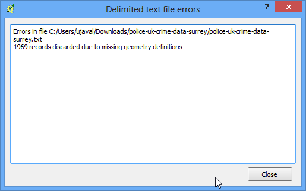
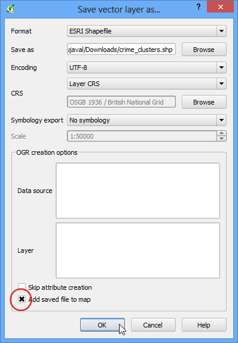

Crearea hărților calorice
[ Download PDF A4 Letter ]
Hărțile calorice reprezintă una dintre cele mai bune modalități de vizualizare a densității datelor de tip punct. Hărțile calorice sunt utilizate pentru a identifica cu ușurință aglomerările, acolo unde există o concentrare mare de activitate. Ele sunt utile, de asemenea, în efectuarea analizei aglomerărilor sau a analizei punctelor fierbinți.
Privire de ansamblu asupra activității
Vom lucra cu un set de date al locațiilor infracțiunilor din Surrey, Marea Britanie pentru anul 2011 și pentru a găsi zonele fierbinți ale criminalității din ținut.
Procedura
Pentru a începe, dezarhivați datele într-un folder. Datele se află în format CSV. Vom importa aceste date în QGIS. (Pentru mai multe detalii, parcurgeți Importul foilor de calcul sau a fișierelor CSV). Clic pe .

Navigați către fișierul police-uk-crime-data-surrey.txt de pe computerul dvs, apoi deschideți-l. Selectați CSV (comma separated values) ca format de fișier. Veți vedea coloanele Easting și Northing selectate automat în dreptul câmpurilor X și Y. Asigurați-vă că ați bifat opțiunea Use spatial index care va accelera operațiunile efectuate asupra acestui strat. Clic pe OK.

Puteți vedea unele erori. Pentru scopul acestui tutorial le puteți ignora. Apăsați Close.

În continuare, este nevoie să alegem un Coordinate Reference System (CRS). Dacă ați citit descrierea datelor, veți observa că referința spațială a acestora este British National Grid. Alegeți OSGB 1936 / British National Grid ca CRS. Clic pe OK.

Acum, veți vedea că datele sunt încărcate în QGIS.

Măriți un pic, pentru a vedea mai bine datele. Veți observa că acestea sunt destul de dense, fiind foarte greu să vă dați seama unde ar exista o concentrare mare de puncte. Acesta este momentul când ar fi bine să aveți o hartă calorică.

Pentru a crea o hartă calorică, e nevoie de activarea unui plugin numit Heatmap. Pentru a activa plugin-urile interne, parcurgeți Utilizarea Plugin-urilor. O dată ce ați activat plugin-ul, mergeți la .

În fereastra de dialog Heatmap Plugin, alegeți crime_heatmap ca nume pentru Output raster. Introduceți 1000 unități de hartă pentru Radius. Raza determină acea arie din jurul fiecărui punct, care va fi folosită în calculul căldurii pe care o primește un pixel. Bifați Advanced pentru a putea specifica dimensiunea hărții. Întroduceți 100 pentru Cell Size X și Cell Size Y. Clic pe OK.

O dată ce prelucrarea este terminată, veți vedea o hartă calorică, în tonuri de gri, încărcată pe suportul hărții.

Pentru a face harta noastră să semene cât mai mult cu hărțile calorice tradiționale, pe care le-ați văzut adesea. Faceți clic dreapta pe stratul zonelor și faceți clic pe Properties.

În fila Style, selectați Singleband pseudocolor ca Render type. Mai departe, în secțiunea Load min/max values, selectați Actual (slower) pentru Accuracy și faceți clic pe Load. În acest mod, harta va fi scanată și se vor găsi valorile minime și maxime ale pixelilor. Valorile respective vor fi folosite în generarea unei game de culori corespunzătoare. În secțiunea Generate new color map, selectați gama de culori YlOrRd (Yellow-Orange-Red) și apăsați Classify. Click pe OK.

În continuare, veți vedea o redare mult mai aspectuoasă a zonelor fierbinți ale stratului. Puteți selecta instrumentul Identify și să faceți clic pe oricare pixel al hărții calorice. O valoare va fi afișată într-o fereastră de tip pop-up. Această valoare indică numărul de puncte din stratul sursă, conținute în raza specificată (în cazul nostru 1000m), având în centru pixelul respectiv.

Acum aveți propria hartă calorică. Aceasta este utilă în interpretarea vizuală, dar nu și atunci când doriți să folosiți aceste rezultate în analiză. De multe ori, este necesară identificarea punctelor fierbinți, în care există o mare concentrare de puncte. Pentru depistarea lor, vom folosi această hartă. Mergeți la .

Mai întâi, va trebui să stabiliți o valoare de prag. Toate valorile pixelilor care depășesc acest prag, vor fi considerate ca făcând parte dintr-o aglomerare. Să folosim o valoare de 5 pentru aceste date. În fereastra de dialog Raster calculator, denumiți stratul de ieșire ca crime_hotspots. Dublu-clic pe crime_heatmap@1 din secțiunea Raster bands, pentru a-l adăuga în zona de text Raster calculator expression. Introduceți expresia “crime_heatmap@1” > 5. Bifați caseta de lângă Add result to project și apăsați OK.

Un nou strat va fi adăugat în QGIS. Acest strat are pixeli cu valori de 0 sau 1. Toți pixelii din stratul de intrare a căror valoare a fost mai mare de 5, au acum valoarea 1, ceilalți pixeli având valoarea 0. Faceți clic pe .

Alegeți ca nume, pentru fișierul de ieșire, crime_hotspots_vector. Bifați casetele din dreptul Field name și Load into canvas when finished. Clic pe OK.

O dată ce conversia se termină, veți avea încă un strat suplimentar în QGIS. În acesta sunt reprezentate vectorial aglomerările create în etapa anterioară. Straturile conțin grupări atât cu valorile 0 cât și cu 1. Haideți să filtrăm valorile 0, pentru a obține aglomerări de zone fierbinți. Faceți clic-dreapta pe strat și selectați Open Attribute Table.

În Attribute table, faceți clic pe Select feature using an expression.

Introduceți expresia “DN” = 1 și faceți clic pe Select. Apoi, apăsați Close.

În fereastra principala a QGIS, veți observa unele entități evidențiate în galben. Acestea sunt entitățile care se potrivesc interogării noastre. Faceți clic dreapta pe strat și selectați Save Selection As....

Alegeți numele crime_clusters pentru stratul de ieșire. Bifați caseta din dreptul Add saved file to map și faceți clic pe OK.

Și iată-l! Stratul final conține zonele fierbinți extrase din harta calorică. Aceste aglomerări reprezintă informaţiile inteligente extrase din datele inițiale, ele oferind o mai bună înțelegere, și servind drept bază de plecare pentru acțiunile viitoare.